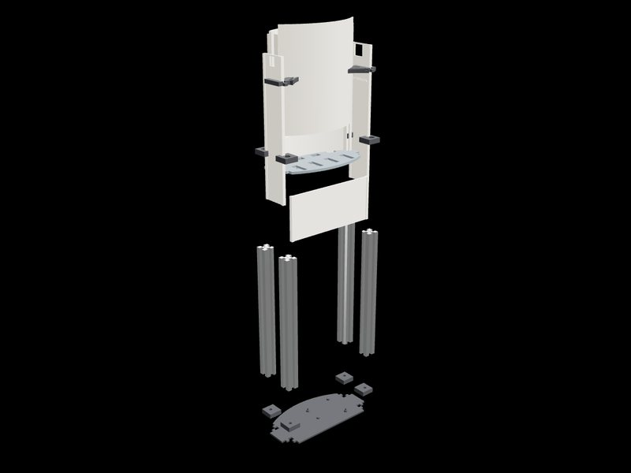
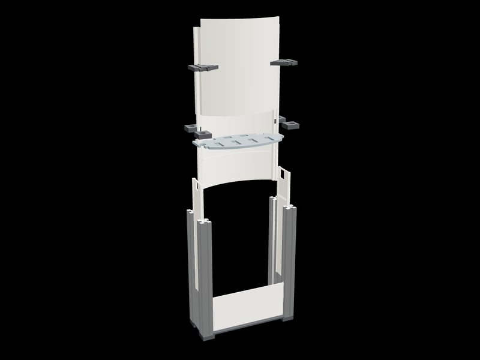
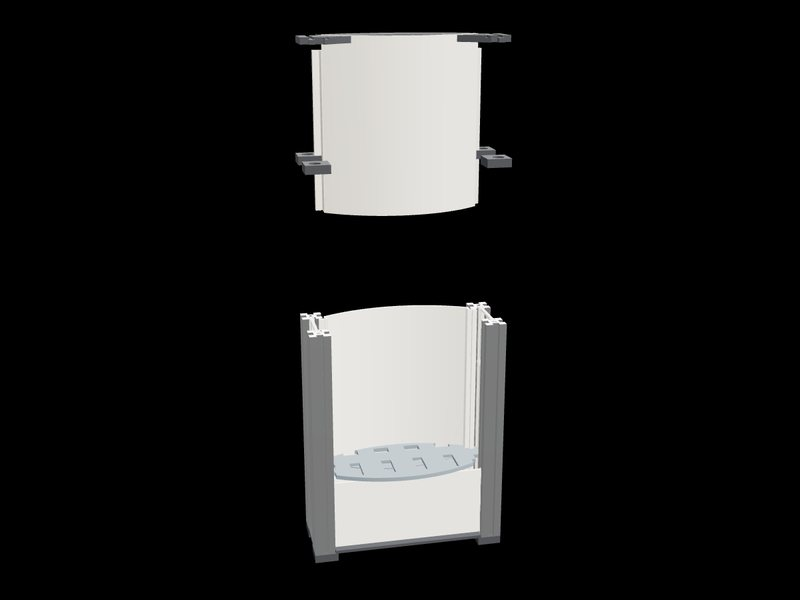
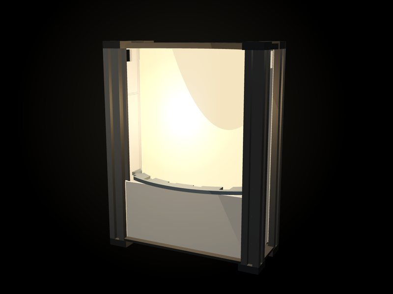

프로파일 골조
2020 규격을 출력에 맞게 고쳐 설계한 기둥 4개. 한쪽 모서리를 3 mm 모따기해 45° 로 눕혀 출력하면 서포트가 필요 없다.
손의 움직임에 따라 반응하는 인터랙티브 오브제 조명. 알루미늄 프로파일 구조를 PLA로 직접 출력해 세우고, 데크 아래 적외선 센서가 읽은 손의 접근을 빛의 세기로 바꾼다. 빛의 움직임을 멍하니 감상해 보세요.
조명은 보통 스위치로 켠다. 손가락이 플라스틱을 누르고, 딸깍 소리가 나고, 빛이 한 번에 들어온다. 그 과정에 빛과 손의 관계는 없다.
어항은 스위치를 없앴다. 손이 가까워지면 밝아지고 멀어지면 어두워진다. 접촉이 아니라 거리가 입력이고, 단계가 아니라 연속적인 값이다. 손을 천천히 움직이면 빛도 천천히 따라온다. 켜고 끄는 행위가 쓰다듬는 행위에 가까워진다.
이름은 물을 담지 않는 어항에서 왔다. 유리 대신 투명 PETG 패널이, 물 대신 호박색 빛이 안에서 흔들린다.
빛을 조작하는 것이 아니라, 빛이 손을 따라오게 한다.
나사는 상·하단 캡 8개에만 쓴다. 나머지 패널은 전부 기둥의 슬롯을 타고 내려가 자리를 잡는다.

2020 규격을 출력에 맞게 고쳐 설계한 기둥 4개. 한쪽 모서리를 3 mm 모따기해 45° 로 눕혀 출력하면 서포트가 필요 없다.

앞·옆·뒤 패널의 혀가 슬롯에 5.4 mm 두께로 맞물린다. 순서대로 내려야 서로를 막지 않는다.

데크 아래에 적외선 센서 4개를 붙인다. 데크가 센서를 가리면서 동시에 물건을 올려놓는 면이 된다.

투명 PETG 패널 뒤에서 빛이 확산된다. 점등색은 호박색 #FFA850
순서가 곧 설계다. 아래 순서를 벗어나면 뒤 부품이 앞 부품에 막힌다.